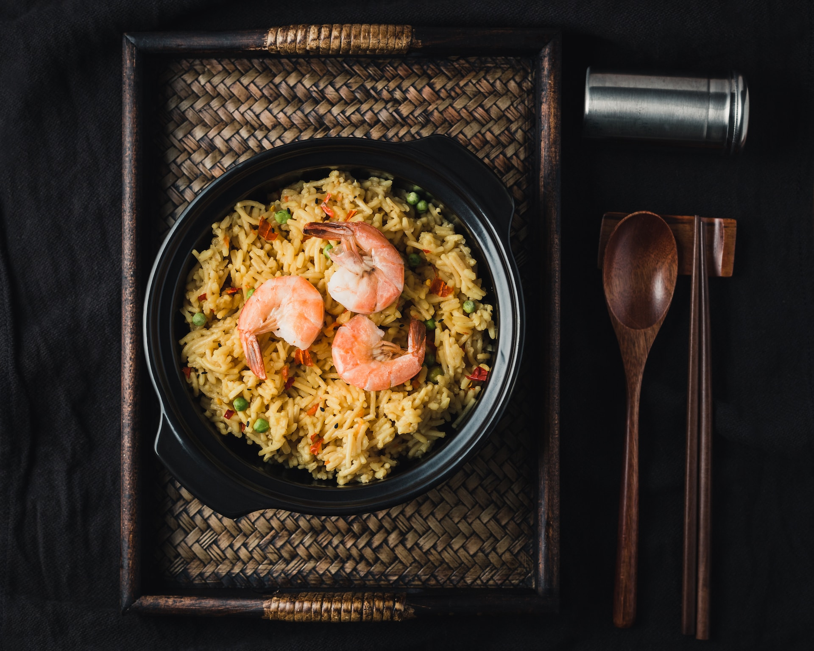
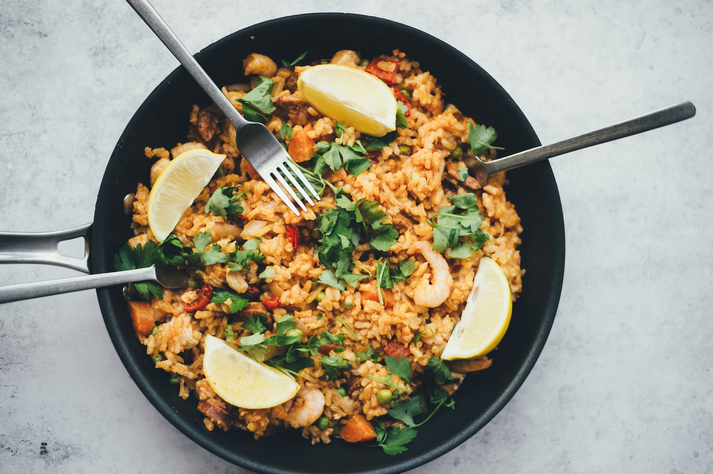
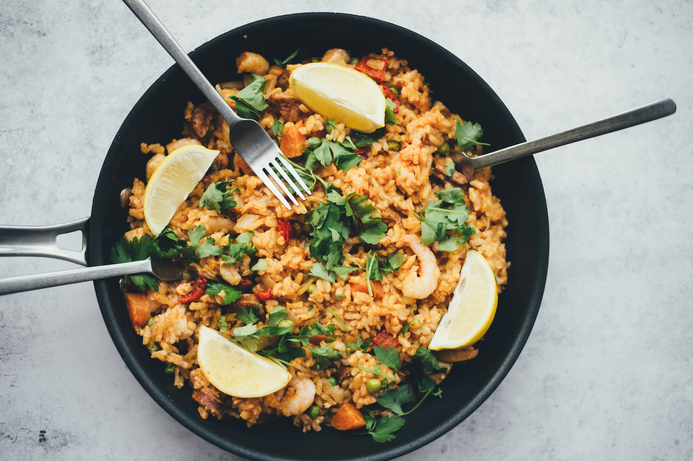
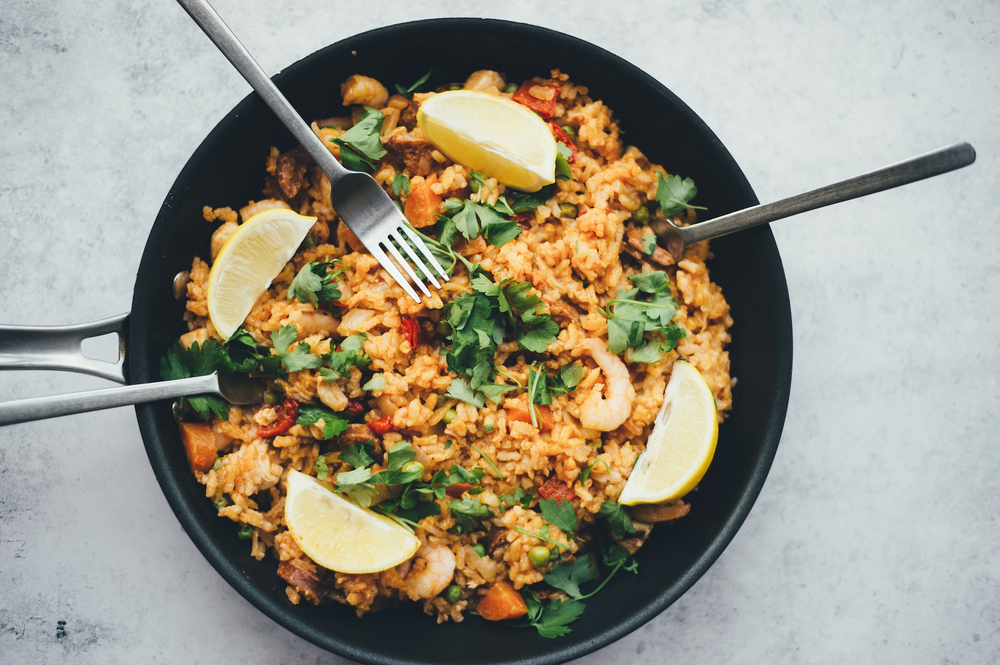

Instructions:
Prepare the Sauce: If using canned chickpeas, rinse and drain them. Chop your mixed vegetables into bite-sized pieces. Mince the garlic and ginger. Chop the onion
Stir-Fry the Vegetables:Heat the olive oil in a large pan or wok over medium-high heat. Add the chopped onion and sauté for 2-3 minutes until it becomes translucent. Add the minced garlic and ginger, and sauté for another 1-2 minutes until fragrant. Add the mixed vegetables to the pan and stir-fry for about 5-7 minutes until they are tender but still crisp. You can adjust the cooking time based on your preferred level of doneness.
Add Chickpeas and Sauce:Add the cooked chickpeas to the pan and pour the sauce over the vegetables and chickpeas. Stir everything together and cook for an additional 2-3 minutes until the chickpeas are heated through, and the sauce is well incorporated. Season with salt and pepper to taste.
To Serve:
Serve the chickpea and vegetable stir-fry over cooked brown rice or quinoa.

 

